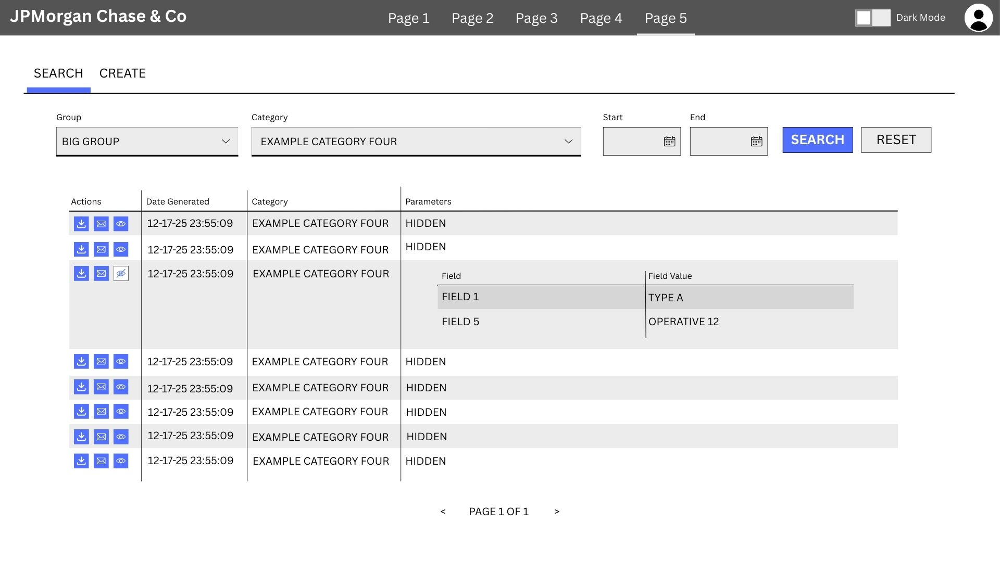

Search Mechanics and Table Structure
Workflow stages side, all are buttons capable of filtering with efficient pagination of data.
Mechanics to allow search for creation date and dynamic dropdown - filling in available fields in dropdown
based on specified category. On popup, reordering table with mandatory fields placed first and automated
comment specifying file source.
Light and Dark Modes and Single-Record Publish Redesign
Changing formatting from an accordion sorted by field type to an easy-to-read form whose sequence can
be manually set by an administrator. Error checks with error displaying under each relevant field.
The image also demonstrates light and dark modes, which is something I implemented for the full application.
Reports Page - Table Inception
AG Grid classes used in ReactJS to style one table inside another
